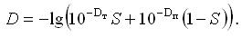
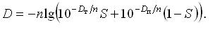
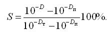

В настоящее время широко известны рациональный и иррациональный методы растрирования.
Рациональными называются числа, которые могут быть представлены в виде правильной дроби (1/2, 1/4), а иррациональными - числа, представленные в виде непериодической бесконечной дроби (1,4).
Рациональные способы растрирования всегда связаны с матрицей, определяемой исходя из характеристик экспонирующего устройства. В традиционной репродуктивной технологии рациональный метод реализуется с помощью стеклянных гравировочных контактных растров. При этом допускается использование углов только с рациональными значениями тангенсов и определенными ограничениями по числу линиатурами растра.
Углы поворота растра для безмуаровой цветной печати и используемые линиатуры растра были закреплены в нормативе DIN 16 547, который базируется на углах поворота 0, 15, 45, 750 (соответственно для желтой, голубой, черной и пурпурной красок).
С появлением электронного цифрового растрирования возникли проблемы в реализации комбинаций из углов поворота растра и его линиатуры. Эти проблемы заключаются в том, что реализация метода давала значительные отклонения от стандарта DIN и еще большие отклонения от применяемых на практике углов поворота и линиатур растра. Так, например, углы поворота 150 и зеркальный 750 можно было получить путем построения ячейки с последовательностью шагов соответствующих структуре 3 : 1 (рис. 20), однако полученные таким построением углы поворота соответственно получаются 18,4349 или 71,56510 (arctg 1/3), что значительно отличает их от углов, определенных стандартом.
Что же касается измененения линиатур растра, то из рис. 21 видно, что при углах 00 и 450 наблюдается их существенное отклонение от заданных стандартом.

Для решения этих проблем было предложено растрирование с "суперячейкой". Для этого необходимо увеличить отдельную ячейку и выполнять вычисления на увеличенной базе. На рис. 22 показана увеличенная в 3 раза базовая ячейка, которая служит в качестве "суперячейки" для вычисления размеров.
Как видно из приведенного рисунка, диагонали точно соответствуют требуемым углам 15 и 75?, а опорные точки всех четырех вершин суперячейки ближе всего лежат к диагонали углов, т. е. отклонения от углов поворота и линиатуры растра внутри одного комплекта фотоформ очень незначительны.
Очевидно, что отклонения от стандарта тем меньше, чем большее число элементов входит в суперячейку, так максимальная точность, соответствующая стандарту DIN, достигается при использовании "суперячейки", состоящей из 3000 и больше элементов.

Иррациональный метод растрирования, в принципе, лишен вышеприведенных недостатков рационального метода. Основой этого метода является матрица растровых точек, так называемая "растровая горка" из 128 x 128 приращений, в которой задаются опорные (начальные) значения с 12-битным разрешением (рис. 23).


создании поверхности растра (не растровой ячейки) получается в местах пересечения линий внутри матрицы экспонирования. При этом растровая ячейка ориентируется на требуемый стандартом угол поворота и линиатуру растра (рис. 24, 25) и может иметь различные варианты выполнения шагов для различных форм ячеек при заданном угле поворота растра.
Таким образом, иррациональная технология растрирования принципиально отличается от рациональных методов растрирования, c которыми работали пользователи классического PostScript - RIP.
Для того чтобы воспроизвести изображение в растровом виде, например, с помощью фотонаборного автомата, рекордера или машины прямой цифровой печати, современные методы растрирования предполагают предварительное преобразование этих изображений в так называемую матрицу экспонирования. Она представляет собой массив данных из нулей и единиц, сформированных в виде математической матрицы.
Преобразование информации изображения в матрицу экспонирования осуществляется растровым процессором (RIP) (рис. 26). Различают аппаратные, программные и аппаратно-программные RIP.

Архитектура классического PostScript - RIP базируется на одной плате, одном главном микропроцессоре (иногда он дополняется аппаратным обеспечением для вычисления растра и передачи данных) и одном дополнительном диске. В противоположность такой "одноплатной" архитектуре RIP 60, реализующий иррациональный метод растра, полностью построен по модульному принципу и сконструирован с учетом будущих модификаций.
Предложенный растровый процессор RIP 60 (рис. 27) наряду с иррациональным методом растрирования имеет также ряд преимуществ:

Используемые в обычной репродуктивной технике устройства производят запись иллюстраций, предварительно их растрируя.
Точки растра представляют собой совокупность микроточек, размер которых равен диаметру сканирующего пятна. Обычно растровые точки полутонового изображения представляют методом растрирования, основанным на использовании суперячейки, состоящей из 16 ? 16 микроточек. При этом возможное число градаций серого соответствует 256. Печатные элементы (рис. 28) могут представлять собой точки различного размера, центры которых образуют регулярную решетку. В этом случае частота расположения печатных элементов постоянна по всему полю. Подобные структуры оттисков называют амплитудно-модулированными (АМ).
Отношение величин запечатываемой и пробельной площади можно варьировать, не изменяя размеры элементов, а лишь управляя расстоянием между ними. Такие оттиски относятся к частотно-модулированным (ЧМ). В последнее время к частотно-модулируемым структурам принято относить оттиски, печатные и пробельные элементы, на которых расположены нерегулярно, хотя они характеризуются по существу смешанной АМ/ЧМ модуляцией, т. е. изменением как площади, так и частоты. Это так называемое стохастическое растрирование.

При такой частотно-модулированной технологии количество экспонированных пикселов, необходимых для получения конкретного оттенка серого, равно количеству пикселов в полутоновой ячейке амплитудно-модулированного растра, но при этом пикселы распределяются по некоторому случайному принципу (рис. 29). В технологии амплитудно-модулированного растрирования присутствуют два фактора, которые ухудшают качество репродуцирования изображения: муар и розетки.

Технологически многокрасочная печать получается наложением растровых решеток друг на друга, что вызывает интерференционное взаимодействие, в результате которого появляется вторичный рисунок в виде светлых и темных полос. Это так называемый муар многокрасочной печати. Он имеет постоянное частотное значение и присутствует на изображении по всему полю независимо от того, что изображено на отдельных участках иллюстрации. Его заметность определяется контрастом, который может быть разным в пределах рисунка и зависеть от тона цвета и характера рисунка.
Некоторые виды муара возникают при взаимодействии растра с периодическим мелкоструктурным рисунком на изображении (текстурой). Собственный муар появляется при взаимодействии растра с решеткой синтезируемого изображения, например, особенно ярко проявляется муар при вторичном растрировании тоновых изображений, перепечатываемых из различных уже вышедших изданий. Две последние разновидности муара имеют место уже на черно-белой репродукции. В цветной тоновой печати они являются как бы дополнительными и их заметность может усиливаться или ослабляться основным муаром, что усложняет их теоретический анализ и визуальную оценку.
В амплитудно-модулированной технологии растр каждой цветовой составляющей имеет свое значение угла поворота. При совмещении этих повернутых на определенный угол растров растровые точки собираются в так называемые розетки - круговые структуры, в которых точки каждой отдельной цветовой составляющей повторяются через каждые 900 (рис. 30).

Растровые точки монохромных изображений не являются видимыми при линиатуре 170 lpi и выше. Таким образом, именно эти значения следует выбирать для печати большей части изображений без риска ухудшить их качество.
Основными путями предотвращения явления муара и розеток являются:
При точном угловом совмещении двух изображений необходимо добиваться, чтобы расстояние между соседними муаровыми полосами превышало размеры рисунка, тогда эта структура не проявится на двухкрасочном изображении.
Следует отметить, что печать "точка в точку" нашла в последние годы практическое применение в тех системах цифровой печати и цветопроб, где краски наносятся на подложку в едином краскопрогоне. Например, в некоторых струйно-капельных системах с компактным расположением четырех красочных аппаратов в одной печатной секции. Отклонения в угловой или параллельной приводке листа ведут лишь к смещению всей иллюстрации на оттиск, а муар и розетки, а также нестабильность тона и цвета исключаются.
Рациональным путем уменьшения влияния муара на качество многокрасочного изображения является поворот растров разных цветов на различные большие углы. Так, при двухкрасочной печати период муара минимален при углах 900, 450 и 300. При наложении третьей краски ее структура взаимодействует со структурой первых двух красок, поэтому углы поворота ее могут быть 450, 22,50 и 150 соответственно. Для наложения четвертой (черной) краски остаются углы 1350, 67,50, 450.Чтобы исключить заметность ступенчатой структуры изображения, самую светлую краску - желтую - печатают не под углом 00, а поворачивают ее иногда на угол, равный 7,50. Относительно него и поворачивают растры остальных трех красок.
Случайная растровая структура создается двумя основными способами: путем применения растровых элементов случайных размеров и форм, а также путем случайного распределения пикселов различной оптической плотности на площади растрового элемента.
В этих способах, благодаря квазислучайному методу распределения экспонируемых пикселов, отсутствует понятие линиатуры и поворота растров цветовых составляющих на определенный угол. В результате этот способ вообще не формирует розеток и в нем отсутствует раздражающий глаз муар. Его используют для работ, к качеству которых предъявляются повышенные требования.
Значения оптической плотности определяется процентным заполнением растровой точки микроточками и аналитически выражается формулой Шеберстова - Муррея-Девиса.
Для определения связи между усредненным коэффициентом отражения и площадями точки и пробела рассмотрим главный параметр растрового изображения относительную площадь печатных (растровых) точек.
Она определяется следующим отношением:
где S - относительная площадь печатных элементов (растровых точек); S' - абсолютная площадь; Sе - единичная площадь (ячейка) растрового изображения; L - линиатура (рис. 31).

Так как Sе обратно пропорциональна квадрату растровой линиатуры 1 / L2, то
Коэффициент отражения Рср, усредняемый по этой площади зрением или измерительной диафрагмой прибора, охватывающим десятки и сотни, запечатанных и пробельных элементов определяется как
где cт и cп - коэффициент отражения соответственно точки (красочного слоя) и подложки.
Поскольку по определению оптическая плотность выражается отрицательным логарифмом коэффициентов отражения (пропускания), то можно записать
где Dт - оптическая плотность точки (красочного слоя);
Dп - оптическая плотность подложки.
Отсюда усредненная оптическая плотность выразится как
|  |
(2) |
Полученное выражение носит строго аналитический характер. Очевидно, что при отсутствии печатных элементов (S=0) D=Dп, а на сплошном красочном слое (S=1) D=Dт.
Вывод этой формулы предполагает линейную зависимость между усредненным коэффициентом отражения и площадями точки и пробела.
Строгий анализ оптической плотности растрированных изображений с учетом рассеивания света в бумаге дает формула Юла-Нильсона, включающая эмпирический коэффициент n:
|  |
(3) |
Этот коэффициент учитывает, что красочный слой краев запечатанных элементов поглощает также часть света, вошедшего через пробел и подвергнутого в толще бумаги рассеиванию в сторону этих элементов, вызывая их кажущееся увеличение, которое называется оптическим растискиванием. Рис. 31, б объясняет его, исходя из поглощения красочным слоем печатного элемента части света вошедшей в бумагу через пробел и подвергшейся диффузионному отражению.
С уменьшением абсолютных размеров точек влияние этого поглощения возрастает, поэтому с ростом линиатуры растра от 25 до 120 лин/см значение коэффициента n увеличивается от 1 до 3. С учетом тех или иных особенностей в печати в последствии предполагались и другие выражения, а также способы определения коэффициента n.
Повышение разрешающей способности печати усилило влияние эффекта оптического растискивания. Уменьшение абсолютных площадей печатных и пробельных элементов до 7-15 мкм, использование нерегулярных растровых структур усложнило геометрию красочного слоя на оттиске, а печатающие и пробельные элементы предельно малых размеров стали влиять на тон и цвет не только в "высоких светах" и "глубоких тенях", но и по всему интервалу полутонов. Поэтому разработка аналитических моделей, позволяющих рассчитать оптические плотности, продолжается и в настоящее время.
Исходя из выражения (2) определим площади S по трем упомянутым измеренным плотностям:
|  |
(4) |
Это выражение дает значение так называемой кажущейся площади точки, т. к. включает оптическое растискивание, имевшее место при измерении D. Физическую площадь точек и их фактические размеры современный денситометр рассчитывает исходя из зависимости (3), т. е. в соответствии с выражением
 |
(5) |